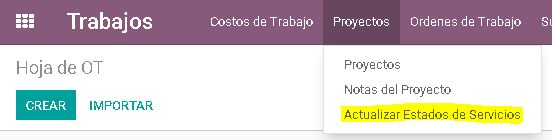
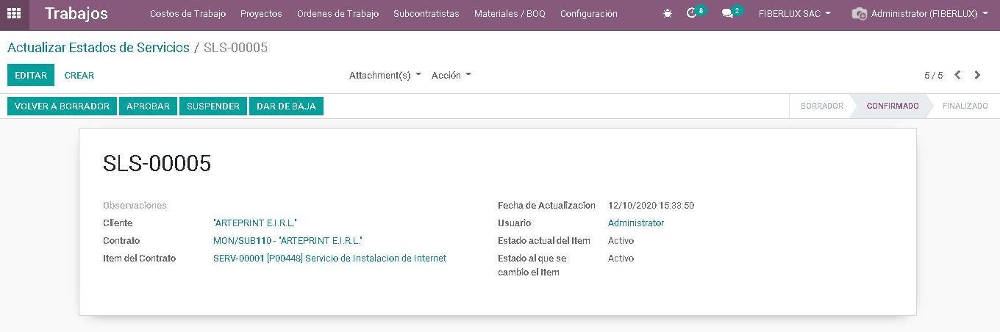
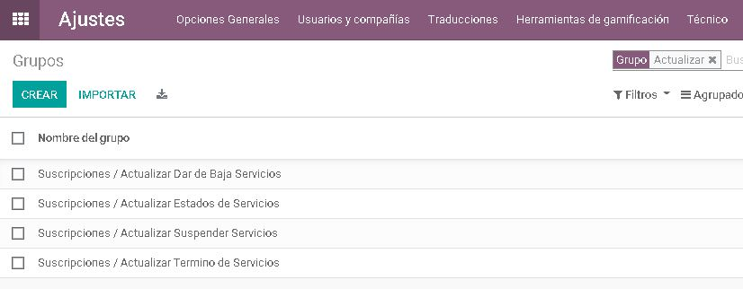
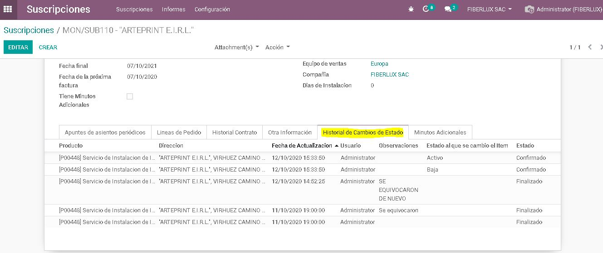
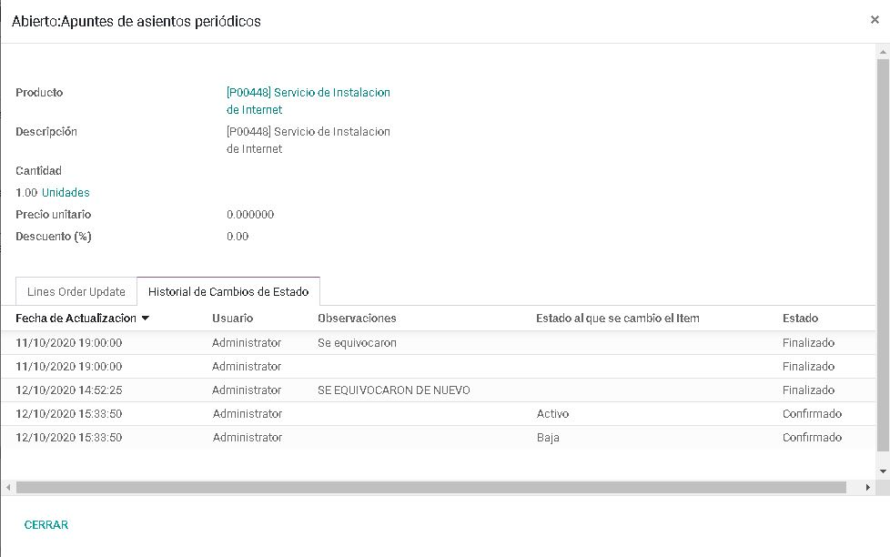

<section class="oe_container lead">
	<div>
		<div>
			<p class="oe_slogan" style="color: #49a3fe;font-size: 35px;font-style: italic;font-weight:bolder;">Actualizacion de Estados de Servicio</p>
			<p class="oe_slogan">Agregando Menu en Trabajos/Proyectos/Actualizacion de Estados de Servicio.</p>
			
			<p class="oe_slogan">Agregando Formulario de Estados de Servicio.</p>
			
			<p class="oe_slogan">Agregando Grupos de Acceso para Manejo de Cambios de Estado y Acceso al modelo</p>
			
			<p class="oe_slogan">Agregando Lineas de Historial de cambios en Suscripciones tanto para la cabecera como para cada item</p>
			<p class="oe_slogan">Formulario de Suscripcion</p>
			
			<p class="oe_slogan">Formulario de Lineas de Suscripcion</p>
			
		</div>
	</div>